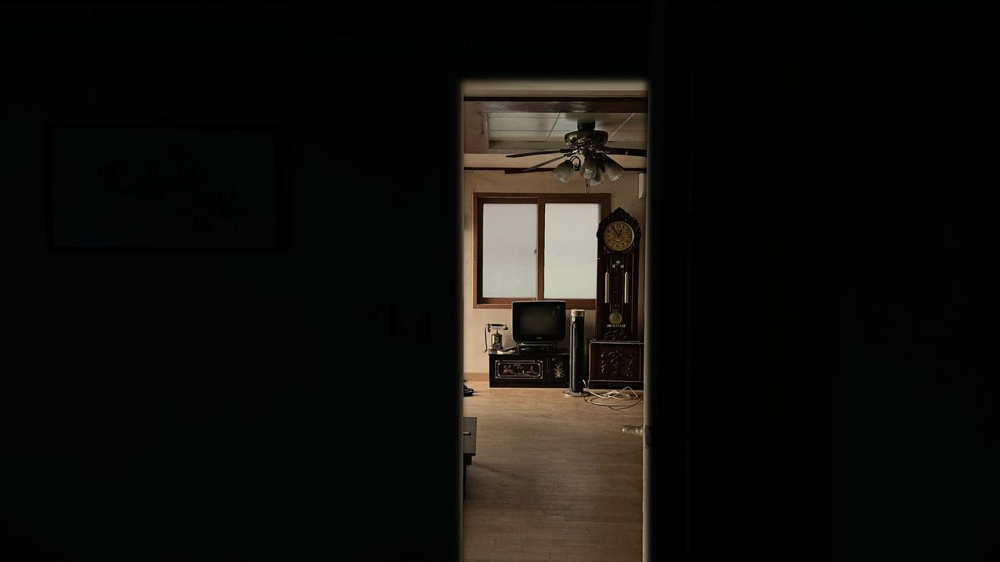
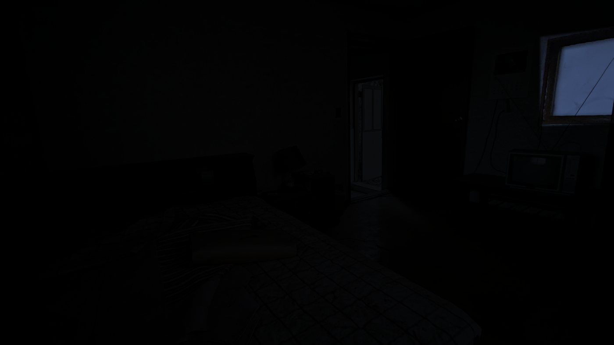
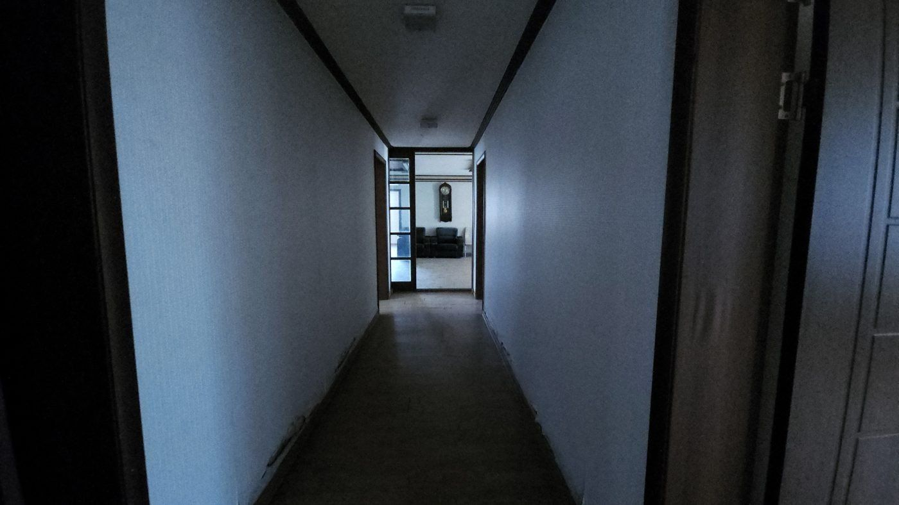
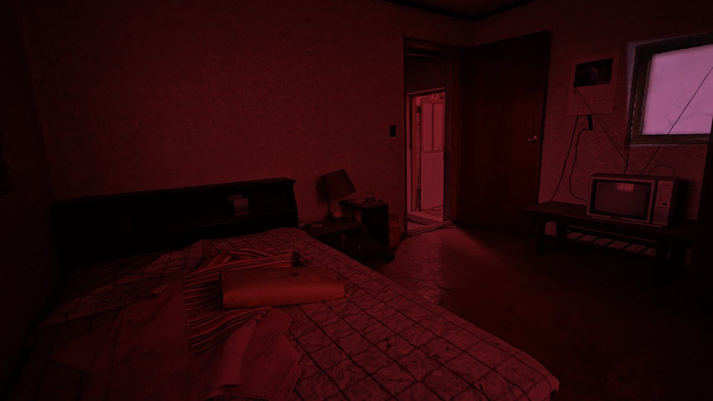

누르면 그 장소 장으로 넘어갑니다.
조건을 바꾸거나 더하면 쓸 수 있는 곳입니다.
순위에 들지 않았어도 장면에 따라 쓸 수 있는 곳들입니다. 함께 봐 주세요.
창밖 멀리 큰 조명 하나. 창살·나뭇가지 그림자가 벽과 침대에 선명하게 떨어집니다.
방 밖 먼 곳에서 문틀 안의 방만 보이게. 집마다 복도·거실·툇마루·격자문으로 깊이를 만듭니다.
1층이면 실제로 걷고, 2층이면 달빛 앞을 지나는 그림자로 받습니다.
과하지 않은 무늬에 운 자국·액자 자국. 없는 집은 떼는 벽지나 세우는 판으로.
● 맞음 · ◐ 바꾸거나 더하면 됨 · ○ 사진으로 미확인
레퍼런스 PDF와 11월 7일 회의를 기준으로 그렸습니다. 상진은 침대에 누워 정면으로 방문, 옆으로 창을 봅니다. 단추로 두 시선을 바꿔 볼 수 있습니다.

정면: 방문 너머만 빛나고 나머지는 어둠. 예시 사진 — 증산로5길 방에서 본 거실(밤 시안).
사촌 남매가 창밖을 걸어 지나갑니다. 창이 두 벽이면 가장 좋고, 한 벽이면 가짜 창이나 그림자로 풉니다.
침대, 2인용 소파, 창 아래 책상, 장롱에 카메라가 빠질 자리까지.
1·8씬은 방 밖 먼 곳에서 문틈으로 방을 봅니다. 복도·거실이 길면 좋습니다.
《라이트하우스》《오아시스》. 창밖에 조명이 설 자리가 있어야 합니다.
드문드문 운 자국, 액자·시계 자국. 없으면 원상복구되는 방식으로 입힙니다.
80~90년대 보통 집 정도.
1·2순위만큼 조건이 다 맞지는 않지만, 한 장면에 꼭 맞거나 미술로 메우면 충분히 쓸 수 있는 곳입니다. 1·2순위 답사 결과에 따라 바로 꺼내 볼 수 있도록 같은 기준(노후감·문과 창·문 밖 깊이·조명 자리)으로 정리했습니다. 카드를 누르면 사진과 의견이 열립니다.
직접 가 보기 전에 로케이션 사이트(필름메이커스·아워플레이스·스페이스클라우드·로케이션마켓·쉐어잇·필름코리아)와 영상위원회 자료를 한 곳씩 넘겨 보며 추린 곳입니다. 게시물 사진만으로 상진의 방 조건을 다시 따져, 바로 답사해 볼 곳은 데스크헌팅 추천 1, 조건이 맞으면 볼 곳은 추천 2로 나눴습니다(보고서의 1·2순위와는 별개). 사진은 게시물 일부만 옮겼고, 카드 안 링크에서 전체를 보실 수 있습니다.
구조는 좋지만 깨끗하거나 스튜디오로 꾸며진 곳입니다. 노후감은 미술로 더해야 합니다.
장소와 상관없이 쓰는 방법입니다. 장치마다 예시로 만든 공간과 특히 잘 맞는 후보를 적었습니다.


창밖 멀리 큰 조명 하나를 두면 그림자가 평행하고 선명해져 달빛으로 읽힙니다. 창 앞에 실제 나뭇가지를 세우면 벽에 가지 그림자가 흔들립니다. 《오아시스》에서 공주가 벽에 비친 나뭇가지 그림자를 무서워하던 것과 같은 장치입니다.
예시 공간: 연천 HID 빈방 · 잘 맞는 곳: 포천, 연천, 경자네(방범창), 강화(격자창)

창밖 조명을 천천히 돌려 빛 띠가 방을 가로질러 지나가게 합니다. 빛이 지날 때만 방이 보입니다.
예시 공간: 포천 침실 · 잘 맞는 곳: 창밖에 조명이 움직일 마당이 있는 포천, 연천, 웅도, 강화
1층이면 실제로 창밖을 걷게 하고, 달빛 앞을 지나는 순간 벽에 큰 그림자가 스칩니다. 2층 집은 이 그림자만으로 같은 장면을 만듭니다.
예시 공간: 연천 HID 빈방 · 그림자로 풀 곳: 청주, 일산 빌라, 의정부 610-5


방 밖 먼 곳에서 망원으로 당겨 열린 문 안의 방만 떠 보이게 합니다. 집마다 깊이를 만드는 방법이 달라서, 각 장소 시안에 그 집 버전을 따로 만들었습니다.
예시 공간: 연천 HID 복도 · 집별 버전: 포천 복도, 증산로 거실, 경자네 레이스 발, 웅도 툇마루, 강화 격자문

한두 프레임만 방 전체를 물들이고 빠지는 쪽이 좋다고 봤습니다. 평소 방이 무채색 달빛이라 크게 튑니다.
예시 공간: 포천 침실
어느 장소로 가든 셋 중 하나로 갑니다.
전체를 한 표로 봅니다. 위 조건 단추가 이 표에도 걸리고, 머리줄을 누르면 그 기준으로 정렬, 줄을 누르면 1·2순위는 그 장소 화면이, 나머지는 사진이 열립니다. 분류의 '사이트 · 추천 1'은 사이트 게시물 안에서 매긴 순서로, 보고서 1순위와 다릅니다.
| 순위 번호 | 이름 | 분류 | 지역 | 서울에서 거리 | 노후감 | 창 위치 | 문 밖 깊이 | 사진 수 |
|---|
헌팅 보고는 이 주소 하나로 1차, 2차… 이어 올립니다. 새 회차가 올라가면 열어 두신 화면도 잠시 뒤 새 내용으로 바뀝니다.
노후감 많이 낡음 · 적당히 낡음 · 깨끗함. 사진으로 본 벽·바닥·가구 기준입니다.
창 '두 벽'은 창이 두 벽에 난 방이 사진으로 확인된 곳입니다.
문 뒤 방문 밖으로 복도·거실이 얼마나 깊게 이어지는지입니다(1·8씬).
시안 헌팅 사진 위에 조명·벽지를 그려 넣은 것으로, 실제 촬영 결과와 다를 수 있습니다.
미확인 사진으로 확인하지 못한 부분입니다. 답사 때 확인합니다.
거리 서울 기준 대략입니다.